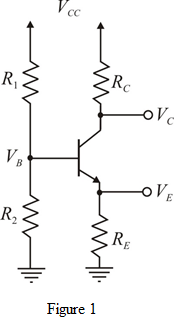

The supply voltage is, .
The collector current is, .
The initial value of forward current gain is,  .
.
Current flowing through the potential divider network is .
Refer to Figure 6.60 (a) in the text book.
Draw the equivalent circuit and indicate the voltages at the base, emitter and collector terminals of the transistor.

The supply voltage is, .
The collector current is, .
The initial value of forward current gain is, .
Current flowing through the potential divider network is .
Since, the current flowing through the base terminal is zero.
The supply voltage equally divided between .
Therefore, the voltage at emitter terminal is,
.
The collector to emitter voltage is, .
The voltage at the collector terminal is,  .
.
The value of the emitter resistance is,
Current flowing through resistors  is .
is .
Apply Kirchhoff’s voltage law in the base- emitter loop.
The value of resistor  is,
is,
The voltage at the base terminal by using voltage division rule is,
Simplify further.
Thus, the suitable tolerance resistors are and .
Apply Kirchhoff’s voltage law in the base- emitter loop.
Here and .
Find the value of  .
.
Find the value of .
.
Substitute and in the expression of the emitter current .
.
Therefore, designed circuit meets the required emitter current.